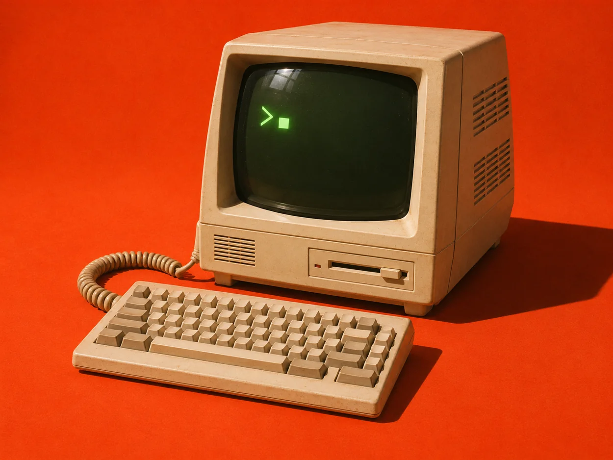

Ciência da Computação
João Pedro
Fonseca.
Gosto de entender o que acontece por trás da tela. Aqui abro o gabinete do meu PC, exploro dados com SQL e mostro como organizo meus estudos.

Projetos de bancada.
Três experiências para testar no navegador.
Minha trajetória
Sobre mim.
Sou do Distrito Federal, técnico em Informática pelo Senac e estudante de Ciência da Computação no UDF. Gosto tanto de montar um PC quanto de descobrir por que um programa se comporta de um jeito inesperado.
Como aprendiz na manutenção elétrica do Aeroporto de Brasília, acompanho ordens de serviço e trabalho com planilhas. Na faculdade, quero levar essa experiência com organização de dados para projetos de backend em Java.
Formação
- AtualCiência da ComputaçãoCentro Universitário do Distrito Federal (UDF)
- 2024Técnico em InformáticaSenac Jessé Freire · 1.200 horas
- 2022Operador de ComputadorSenac Jessé Freire · 196 horas